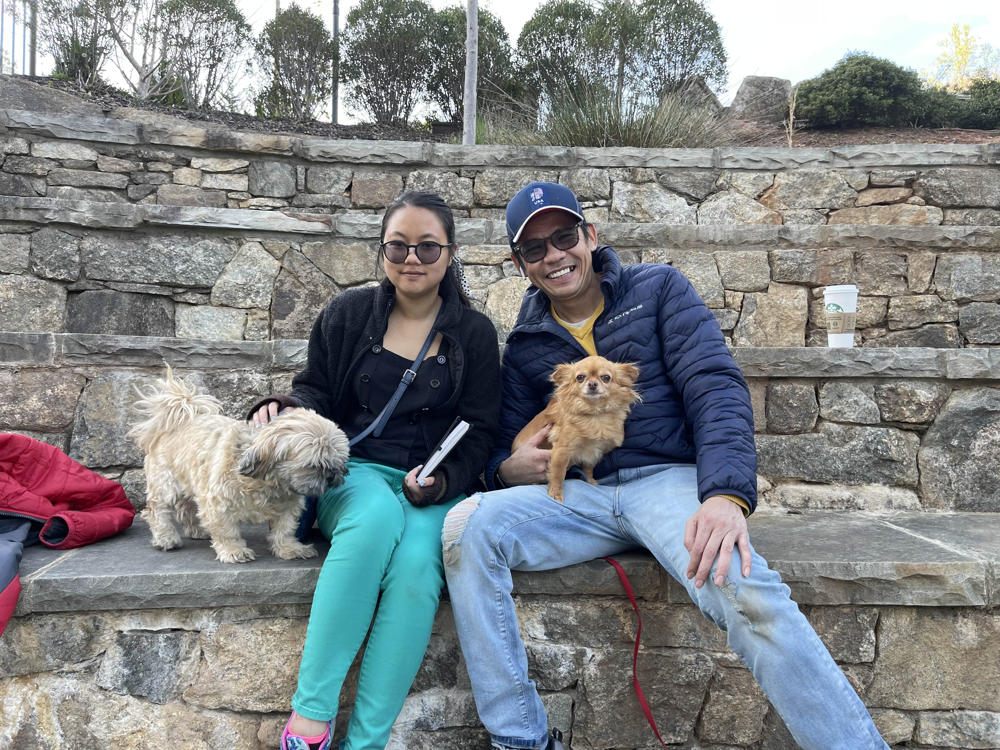

My name is Annie Vo. I am a 22 year old person who does traditional art for a living. I begin drawing when I was in middle school. What inspire me to draw was my elementary art teacher who first show me how to draw and paint. It was basic, but it means a lot to me. I recently go back to painting now that Anderson University gives me the opportunities to do it.
I live in Simpsonville for most of my life, however I used to live in Greenville. I live in a nice neighborhood where we are close-knitted like a community. I remember how we have festival where the neighbors get to have fun and chat towards one another. I never really have a neighborhood like that ever again, but I think that's what makes it special. The community is what drew me to Anderson University.